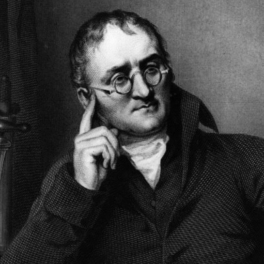
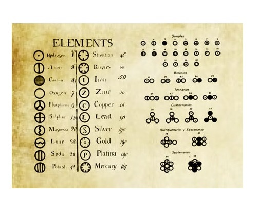
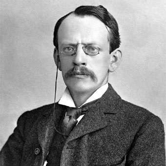
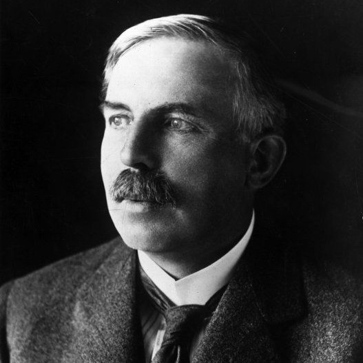
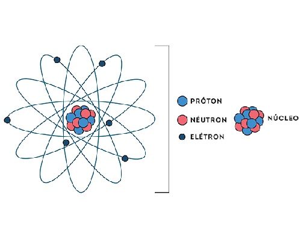
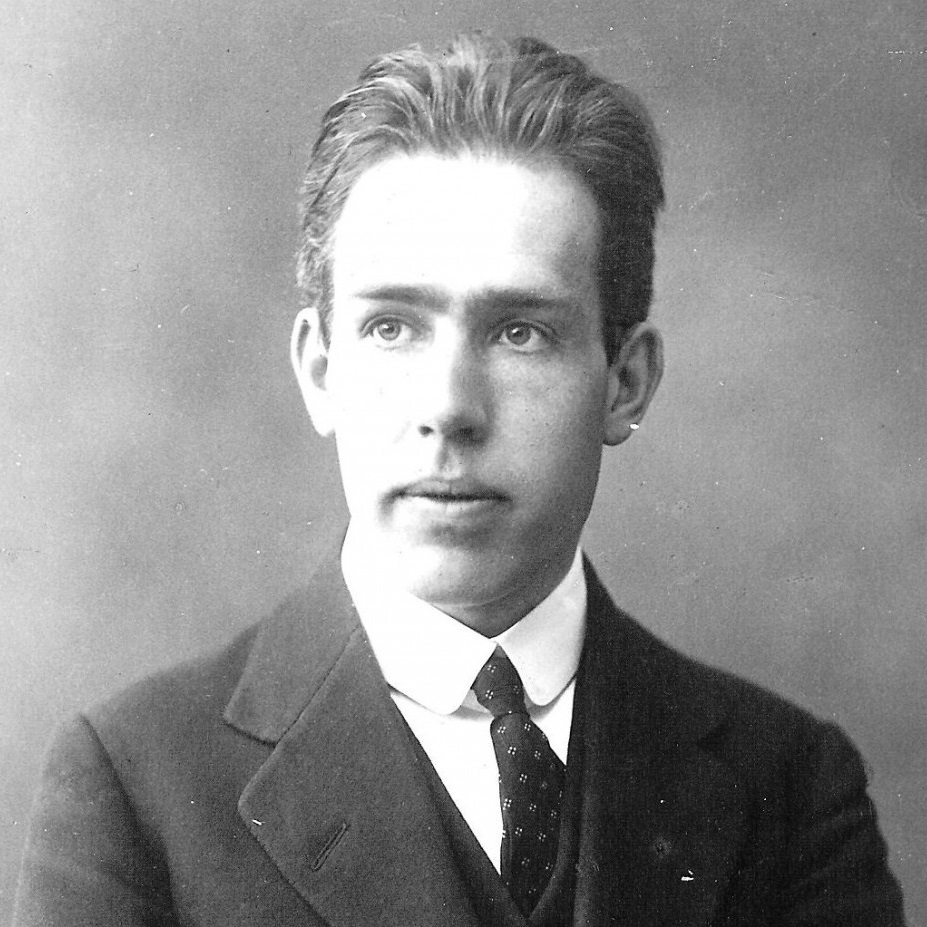
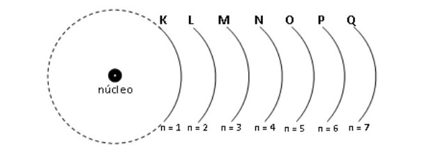
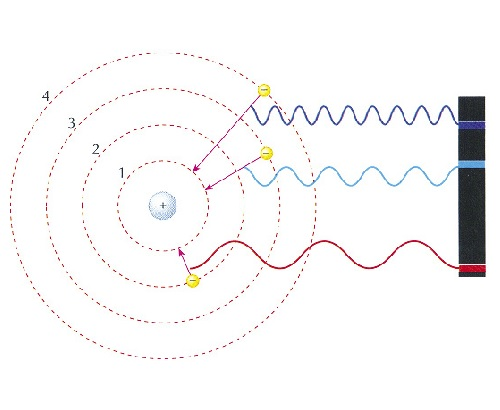

Teoria Atômica de Dalton
John Dalton, químico por formação, nasceu no condado de Cumbria, Inglaterra, em 1766. Sua vida foi destinada desde cedo à pesquisa científica e ao magistério, contribuindo para o desenvolvimento de diversas áreas do conhecimento. Seu maior legado como cientista, no entanto, foi o desenvolvimento da primeira teoria em que o átomo recebeu de fato um caráter científico.
Foi por meio de vários experimentos relacionados com a mistura de gases e do conhecimento dos trabalhos propostos por Lavoisier que surgiu a teoria atômica de Dalton em 1803. A teoria atômica de Dalton foi fundamental para o desenvolvimento do conhecimento atômico, pois serviu de base para que outros cientistas conhecessem o átomo e suas características.
- Postulados de Dalton:
- Átomos são a menor parte da matéria;
- Toda matéria é constituída de átomos que não podem ser divididos nem destruídos;
- Átomos de um mesmo elemento apresentam massas iguais e átomos de elementos químicos diferentes apresentam massas diferentes;
- Um elemento químico é um conjunto de átomos com as mesmas propriedades (tamanho e massa);
- Compostos são combinações de dois ou mais tipos diferentes de átomos;
- Uma reação química é um rearranjo de átomo.
Dalton nomeou o seu modelo atômico de bola de bilhar e, por isso, passou a representar os átomos dos elementos conhecidos em sua época por meio de símbolos esféricos.
Galeria de fotos

Teoria Atômica de Thomson

Thomson (Joseph John Thomson ou, simplesmente, J.J. Thomson) foi um físico britânico
que após ter diversas evidências experimentais sobre a existência do elétron, ele derrubou
a teoria da indivisibilidade do átomo proposta por John Dalton.
Thomson, a partir de seu modelo (proposto em 1898), confirmou e provou a existência de elétrons (partículas
com carga elétrica negativa) no átomo, ou seja, o átomo possui partículas subatômicas.
Thomson propôs seu modelo atômico tendo como base descobertas relacionadas com a radioatividade
e experimentos realizados com o tubo de raios catódicos construído pelos cientistas Geissler e
Crookes.
Veja um vídeo que demonstra tal experiência:
- Considerações propostas pelo modelo atômico de Thomsom
- O átomo é uma esfera, mas não maciça como propunha o modelo atômico de John Dalton;
- O átomo é neutro, já que toda matéria é neutra;
- Como o átomo apresenta elétrons, que possuem cargas negativas, logo, deve apresentar partículas positivas para que a carga final seja nula;>
- Os elétrons não estão fixos ou presos no átomo, podendo ser transferidos para outro átomo em determinadas condições;
- O átomo pode ser considerado como um fluido contínuo de cargas positivas onde estariam distribuídos os elétrons, que possuem carga negativa;
- Associou o seu modelo a um pudim de passas (as quais representam os elétrons);
- Como os elétrons que estão espalhados apresentam a mesma carga, existe entre eles uma repulsão mútua, o que faz com que estejam uniformemente distribuídos na esfera.
Com os experimentos realizados com o tubo de raios catódicos, Thomson propôs sua
interpretação de como seria o átomo e sua constituição.
Assim, de acordo com ele:
Galeria de fotos
Teoria Atômica de Rutherford
Em 1911, Ernest Rutherford, um físico e químico neozelandês, apresentou seu modelo atômico, que também ficou conhecido por muitos como modelo planetário, e foi desenvolvido a partir do estudo das propriedades dos Raios-x.
Rutherford fez várias pesquisas em relação à radiação, o que lhe rendeu o Nobel de Química
em 1908, por descobrir os raios alfa, e descobrir que esses raios consistiam em átomos de Hélio
sem seus elétrons, e também a possibilidade de realizar sua experiência mais famosa. Esta
experiência se contitui por uma lâmina de ouro extremamente fina, que permite a passagem dos
raios alfa por entre seus átomos, uma Placa metálica coberta de Sulfeto de Zinco e certa quantidade
de Polônio.
Assista um vídeo que explica o experimento realizado que contruibuiu para que Rutherford
desenvolvesse sua teoria:
-
Características do modelo planetário:
- Núcleo:
- Possui partículas positivas (prótons);
- É muito pequeno em relação a eletrosfera;
- Massa maior do que a eletrosfera;
- Maior “densidade”, ou maior “concentração” do átomo.
- Eletrosfera:
- Possui um imenso espaço vazio;
- Possui partículas negativas (elétrons).
Galeria de fotos

Teoria Atômica de Bohr
O dinamarquês especialista em física atômica Niels Bohr, em 1913 estabeleceu um modelo atômico que é usado até os dias atuais. Bohr chegou a esse modelo de átomo refletindo sobre o dilema do átomo estável. Ele acreditava na existência de princípios físicos que descrevessem os elétrons existentes nos átomos. Esses princípios ainda eram desconhecidos e graças a esse físico passaram a ser usados.
Bohr iniciou seus experimentos admitindo que um gás emitia luz quando uma corrente elétrica passava nele. Isso se explica
pelo fato de que os elétrons, em seus átomos, absorvem energia elétrica e depois a liberam na forma de luz.
Veja a foto:
Se um elétron no estado fundamental absorve um fóton, ele salta para o nível de energia imediatamente superior, ficando em um estado ativado. Quando o processo contrário ocorre (nível de maior energia para menor), o elétron emite certa quantidade de energia radiante, sob forma de um fóton de comprimento de onda específico.
Conceito de Bohr: Os elétrons estão distribuídos em camadas ao redor do núcleo. Existem 7 camadas eletrônicas, representadas pelas letras maiúsculas: K, L, M, N, O, P e Q. À medida que as camadas se afastam do núcleo, aumenta a energia dos elétrons nelas localizados.
- Conclusões de Niels Bohr Baseando-se nos fundamentos de Max Planck, Bohr reformulou a teoria atômica mediante conclusões resumidas a cinco postulados:
- A energia emitida (ou absorvida) por um sistema atômico não é contínua, como mostrado pela eletrodinâmica, mas se processa através de transições do sistema de um estado estacionário para algum outro diferente;
- Radiação de frequência bem definida é emitida por um sistema atômico quando há transição de elétron entre camadas;
- O átomo está no seu estado fundamental (mais estável) quando todos os seus elétrons etiverem se movimentando em seus respectivos níveis de menor energia
- As possíveis órbitas descritas por elétrons em torno do núcleo atômico são múltiplos inteiros de h/2π. Inclusive nas órbitas provenientes de uma transição;
Galeria de fotos

Sobre o site
Desenvolvedores:
Maria Eduarda Batista Porto
Estilização/Layout/Desevolvimento JS
Vinícius de Morais
Pesquisa e conteúdo/Idealização
 Tarcísio Junior
Tarcísio Junior
Pesquisa e conteúdo/Idealização
• Trabalho desenvolvido por estudantes do CEFET-MG, do curso técnico 'Redes de Computadores'.
Colaboradores:
Prof. Daniel Hasan - CEFET-MG